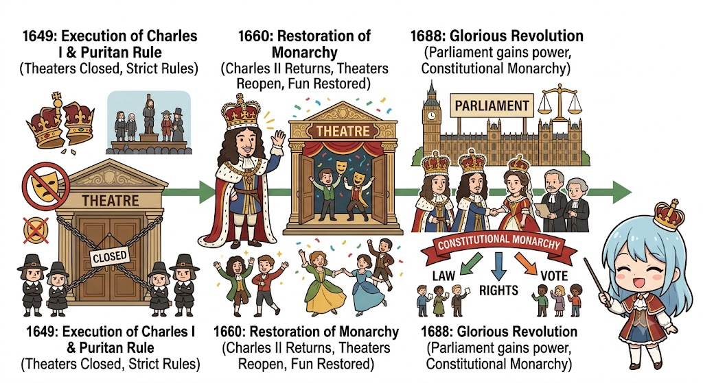

MJC 08: British Literature — 18th Century
| ENGLISH | |
| 8 | |
| Study Space | |
| https://drive.google.com/drive/folders/1dgsWdEjXCR8vLmOjHvJwslP7QnZbskUa?usp=drive_link |
Unit 1: Historical Overview of the Period
🌟 Unit Introduction: What is this unit about?
Welcome to Unit 1! Before diving into the deep literary works like Gulliver’s Travels or Robinson Crusoe, we need to step back and look at the 18th-Century Britain.
Think of history and literature as cause and effect:
- The Political Big Picture (Section 1.1): First, we will look at two major political turning points — the Restoration Period (1660) and the Glorious Revolution (1688). These events brought stability, ended monarchical tyranny, and gave power to Parliament.
- The Intellectual Revolution (Section 1.2): Because society became stable and scientific, people changed how they thought! This gave rise to The Enlightenment (reason over blind faith) and Neoclassicism (art/literature inspired by order, logic, and ancient Greek/Roman rules).
How it connects to the rest of the syllabus:
- The political conflicts and party systems (Whigs vs. Tories) that started here will directly show up as political satire in Jonathan Swift’s Gulliver’s Travels (Unit 2).
- The rise of the middle class, trade, and individualism will explain why the modern novel was born with Daniel Defoe’s Robinson Crusoe (Unit 3).
- The focus on human limits, mortality, and society leads us straight to Thomas Gray’s Elegy Written in a Country Churchyard (Unit 4).
Now, let's start step-by-step with 1.1.1 Restoration Period!
1.1 Historical and Political Background
1.1.1 Restoration Period (1660)
1. What does "Restoration" mean?
The word Restoration literally means "bringing something back."
In 1660, King Charles II returned from exile in France to take the English throne. This brought back (restored) the Monarchy (rule by a King/Queen) after 11 years of strict Puritan rule under Oliver Cromwell (known as the Commonwealth/Interregnum period).
2. Historical Background: How did we get here?
To understand 1660, you need to know what happened right before it:
- 1649 — Execution of King Charles I: England had a violent Civil War between the King's supporters (Royalists) and Parliament's supporters (Puritans). Parliament won, and King Charles I was beheaded!
- 1649–1660 — The Puritan Rule (Oliver Cromwell): England became a republic without a king. The Puritans were extremely strict religious rulers:
- They closed down all theaters and public entertainment.
- Sports, dancing, and even celebrating Christmas were banned!
- People felt oppressed and tired of strict religious discipline.
- 1660 — The Return of the King: When Oliver Cromwell died, his son couldn't hold power. The people and Parliament invited Charles I's son, Charles II, to come back and rule. Everyone celebrated in the streets!
3. Key Features of the Restoration Period
- Reopening of Theaters & Cultural Boom:
- Charles II loved French culture, drama, and luxury.
- Theaters were reopened! A new genre called Restoration Comedy (or Comedy of Manners) became popular, filled with wit, humor, romance, and satire.
- For the first time in English history, women were allowed to act on stage as professional actresses!
- Rise of Two Political Parties (Whigs vs. Tories):
- This period saw the birth of modern parliamentary politics with two opposing groups:
- The Whigs: Supported Parliament's power, religious freedom for Protestants, and urban merchants/traders.
- The Tories: Supported the King's authority, traditional monarchy, and the land-owning nobility.
- Scientific Revolution & Reason:
- In 1660, The Royal Society was established to promote scientific experimentation and discovery (led by figures like Sir Isaac Newton).
- Blind religious superstition began to give way to logic, observation, and scientific enquiry.


4. Impact of the Restoration on Literature
- Wit and Satire: Writers used clever humor and sharp satire to critique society, politics, and human foolishness.
- Clarity and Logic: Literature moved away from overly complicated, hard-to-understand poetry towards clear, elegant, and logical prose.
- Focus on Real Society: Authors focused on urban life, social manners, human vices, and real-world politics rather than mythical tales.
💡 Quick Revision Summary & Memory Trick
- Mnemonic / Memory Formula: "3 R's of Restoration"
- Return of Monarchy (Charles II in 1660).
- Reopening of Theaters (Actresses on stage!).
- Rise of Reason & Parties (Whigs vs. Tories, Royal Society).
- Exam Tip: If a question asks about the political context of 18th-century satire, highlight that the political rivalry between Whigs and Tories during the Restoration laid the groundwork for satirical works like Swift's Gulliver's Travels!
1.1.2 The Glorious Revolution (1688)
🌟 What is the Glorious Revolution? (In Simple Terms)
The Glorious Revolution of 1688 was a major political turning point in English history.
It is called "Glorious" (or Bloodless) because a huge political shift happened—the King was replaced, and the entire government system changed—without any massive war or bloodshed!
📖 The Story Behind the Event
To understand why this happened, think of it as a power struggle between the King and Parliament:
- The Problematic King: King James II came to power in 1685. He was a strict Roman Catholic ruler in a mostly Protestant country. He started ruling like an absolute dictator, ignoring the laws made by Parliament and favoring Catholics for top government positions.
- The Breaking Point: People were afraid that England would turn into a permanent Catholic dictatorship, especially after James II had a son who would inherit the throne.
- The Secret Plan: Seven top English politicians (from both Whig and Tory parties) secretly invited William of Orange (a Protestant leader from the Netherlands) and his wife Mary (who was King James II’s Protestant daughter) to come to England with an army and take over the throne.
- The "Bloodless" Escape: When William landed in England in 1688, King James II realized he had lost all support from his army and navy. Panic-stricken, James II threw the Great Seal of the Realm into the River Thames and fled to France!
- The New Era: Because James fled, Parliament declared the throne vacant and handed it to William and Mary as joint rulers—but with strict new conditions!
⚙️ Key Causes of the Glorious Revolution
- Religious Tension: England was predominantly Protestant, but King James II was Catholic. He tried to force pro-Catholic policies across the nation.
- Divine Right vs. Parliamentary Power: James II believed in the "Divine Right of Kings" (the idea that God gave the King absolute authority, so no one, including Parliament, could question him). Parliament strongly opposed this.
- Birth of a Royal Heir (1688): When James II's wife gave birth to a son, people panicked. They realized England would continue to be ruled by a line of Catholic absolute monarchs unless they acted immediately.
⚖️ The Result: Bill of Rights (1689)
Before William III and Mary II could officially take the crown, Parliament made them sign a vital legal document: The Bill of Rights (1689).
This document forever changed how Britain was governed:
- End of Absolute Monarchy: The King could no longer rule alone or ignore laws made by Parliament.
- Rise of Constitutional Monarchy: Power was divided. Parliament became the primary authority for making laws and collecting taxes.
- Freedom of Speech in Parliament: Members of Parliament could speak freely without fear of being arrested by the King.
- No Catholic Rulers: Future Kings and Queens of England were legally required to be Protestant.

📚 Impact on 18th-Century Literature
The Glorious Revolution created the exact world that 18th-century writers lived and wrote in:
- Growth of the Middle Class & Commerce: Political stability allowed trade, business, and printing presses to boom. This expanding reading public created a huge demand for new literary forms—giving birth to the Modern Novel (e.g., Robinson Crusoe).
- Rise of Satire & Political Journalism: Writers could now publicly discuss and criticize government policies without immediately being executed by a monarch. Authors like Jonathan Swift used satire to critique politicians and social trends.
- Values of Reason and Balance: The idea that laws and social contracts should govern society (rather than emotional tyranny) led directly to the intellectual movement known as The Enlightenment.
💡 Quick Revision Summary & Memory Trick
- Key Takeaway: Glorious Revolution (1688) = No Bloodshed + Power Shifted from King to Parliament.
- Mnemonic / Memory Formula: "3 P's of 1688"
- Protestant Succession (William & Mary replaced James II).
- Parliamentary Supremacy (Bill of Rights signed in 1689).
- Printing & Peace Boom (Paved the way for 18th-century novels and satire).
- Exam Tip: Whenever you mention the rise of 18th-century prose or satire in your answers, mention that the political stability brought by the Glorious Revolution of 1688 gave writers the freedom and audience to flourish!
1.2 Literary and Intellectual Movements
1.2.1 Neo-Classicism (New Classicism)
🌟 What is Neo-Classicism? (In Simple Terms)
Neo-Classicism comes from two words: "Neo" (New) + "Classicism" (the style and values of Ancient Greece and Rome).
It was the dominant literary and artistic movement in England from roughly 1660 to 1780 (covering the Restoration and most of the 18th century). Writers of this period believed that the ancient Greek and Roman masters (like Homer, Virgil, and Horace) had already achieved perfection in art. Therefore, modern writers should not invent chaotic new rules—they should follow the "New Classic" standards of order, logic, balance, and restraint.
📖 Why Did Neo-Classicism Emerge? (Historical Context)
To understand Neo-Classicism, compare it to what came right before it:
- Reaction against Renaissance Excess: Literature in the previous century was full of wild imagination, emotional outbursts, and overly complex metaphors (like Metaphysical poetry). Neo-Classical writers felt this was messy and uncontrolled.
- Desire for Stability: After the chaos of the English Civil War and political instability, society wanted peace, order, and predictable rules. Neo-Classicism reflected this desire for discipline in art and literature.
- Influence of Science and Philosophy: The Scientific Revolution proved that the universe runs on fixed natural laws. Writers believed literature should follow structured, logical laws too.
⚙️ Key Features of Neo-Classical Literature
- Emphasis on Reason and Logic (Over Emotion):
- Writers valued head over heart. Passion and wild imagination were seen as dangerous, while reason, common sense, and self-control were celebrated.
- Imitation of Classical Models:
- Authors strictly followed ancient literary forms such as the Epic, Satire, Elegy, and Epistle.
- Adherence to Rules and Order:
- Poetic forms were neatly structured. The most popular form was the Heroic Couplet (two rhyming lines of iambic pentameter, e.g., Alexander Pope's poetry), which offered perfect balance and rhythm.
- Focus on Society (Not Individual Self):
- Instead of writing about private, personal feelings, Neo-Classical literature focused on man as a social animal. It examined social manners, public morality, and political institutions.
- Use of Wit and Satire:
- Humor was not just for entertainment; it was used as a social tool. Through satire, writers exposed human foolishness, arrogance, and corruption to correct society.

📚 The Three Phases of Neo-Classicism
Literary historians divide the Neo-Classical period into three distinct ages:
| Age | Period | Key Figures | Main Characteristics |
|---|---|---|---|
| 1. Restoration Age | 1660 – 1700 | John Dryden, William Congreve | Focus on French influence, theater revival, wit, and comedy of manners. |
| 2. Augustan Age | 1700 – 1745 | Jonathan Swift, Alexander Pope, Daniel Defoe | Peak of Neo-Classicism. High political satire, heroic couplets, and the birth of the novel. |
| 3. Age of Sensibility (Age of Johnson) | 1745 – 1798 | Samuel Johnson, Thomas Gray | Transition phase. Classicism remains, but early elements of feeling, nature, and melancholy creep in (leading to Romanticism). |
🔗 How Neo-Classicism Connects to Your Syllabus
- Jonathan Swift (Gulliver’s Travels - Unit 2): Swift uses Neo-Classical satire and reason to attack human pride and irrationality.
- Daniel Defoe (Robinson Crusoe - Unit 3): Crusoe uses logic, practical reason, and order to survive on the island—a perfect reflection of the Neo-Classical mindset.
- Thomas Gray (Elegy Written in a Country Churchyard - Unit 4): Written during the final phase (Age of Sensibility), it uses formal Classical structure while shifting focus toward quiet emotion and nature.
💡 Quick Revision Summary & Memory Trick
- Key Definition: Neo-Classicism = Bringing back Ancient Greek/Roman rules of logic, order, and restraint to modern literature.
- Mnemonic / Memory Formula: "R-O-S-E"
- Reason over Emotion.
- Order & Fixed Rules (Heroic Couplets).
- Social Focus & Satire.
- Emulation (Imitation) of Classics.
- Exam Tip: If an exam question asks about the literary style of the 18th century, contrast Neo-Classicism with Romanticism: Neo-Classicism is about head, rules, and society, whereas Romanticism is about heart, freedom, and nature!
1.2.2 The Enlightenment
🌟 What is The Enlightenment? (In Simple Terms)
The Enlightenment (also known as the Age of Reason) was an intellectual and philosophical movement that swept across Europe during the 18th Century.
Think of it as a huge mental "light switch" turning on across society! Before this period, people blindly accepted whatever the King or Church told them to believe. During the Enlightenment, thinkers declared: "Do not accept anything just because an authority said so. Think for yourself! Use your own logic, science, and observation."
The motto of the Enlightenment (coined by philosopher Immanuel Kant) was:
"Sapere Aude" — "Dare to know! Have the courage to use your own understanding."
📖 Background: What Caused The Enlightenment?
- The Scientific Revolution: Discoveries by scientists like Sir Isaac Newton (gravity, laws of motion) and Galileo proved that the universe operates on predictable, natural laws—not random magic or divine anger.
- Philosophical Breakthroughs: Thinkers like John Locke argued that all human beings are born with natural rights (life, liberty, property) and that knowledge comes from real-world experience (Empiricism), not inherited dogma.
- Growth of Coffee Houses & Public Debate: In 18th-century England, coffee houses became "penny universities." For the price of a cup of coffee, ordinary people, merchants, and scholars sat together to read newspapers, discuss science, critique government policies, and debate philosophy.
⚙️ Key Principles of Enlightenment Thought
- Rationalism & Empirical Observation:
- Knowledge must be proven through logic, experimentation, and evidence—not superstition or blind religious faith.
- Individualism & Human Rights:
- Every person has inherent value and the ability to reason. Government exists only to protect human rights through a "social contract" with the people.
- Faith in Human Progress:
- Enlightenment thinkers believed that through education, science, and social reform, human society would continuously improve and eliminate poverty, ignorance, and tyranny.
- Skepticism Toward Religious Fanaticism:
- While most thinkers still believed in God (often as a "Clockmaker" who created the universe and let it run on natural laws—a view called Deism), they strongly opposed religious wars, corruption, and church hypocrisy.

📚 Impact of The Enlightenment on 18th-Century Literature
The Enlightenment completely transformed what writers wrote about and how they wrote:
- The Birth of the Modern Novel: Literature shifted toward realism. Authors wrote about ordinary human beings using practical reason to navigate real problems (e.g., Robinson Crusoe using scientific problem-solving on a desert island).
- Development of Satire as a Reform Tool: Authors like Jonathan Swift used biting satire to highlight when humans failed to live up to their own rational potential.
- Prose Literature & Dictionaries: Clear, straightforward prose became the standard for communication. Figures like Samuel Johnson spent years compiling the first major Dictionary of the English Language (1755) to organize and standardize knowledge.
🔗 How Unit 1 Connects to the Rest of Your Course
Now that you have completed Unit 1, look at how these historical and intellectual foundations directly support the remaining three units:
┌─────────────────────────────────────────────────────────┐
│ 18th CENTURY │
│ Restoration + Glorious Revolution + Enlightenment │
└───────────────────────────┬─────────────────────────────┘
│
┌────────────────────────────────────┼────────────────────────────────────┐
│ │ │
▼ ▼ ▼
┌───────────────────┐ ┌───────────────────┐ ┌───────────────────┐
│ UNIT 2 │ │ UNIT 3 │ │ UNIT 4 │
│ Jonathan Swift │ │ Daniel Defoe │ │ Thomas Gray │
│ Gulliver's Travels│ │ Robinson Crusoe │ │ Elegy in Churchyard│
├───────────────────┤ ├───────────────────┤ ├───────────────────┤
│ Uses ENLIGHTENMENT│ │ Uses RATIONALISM │ │ Uses CLASSICAL │
│ SATIRE to critique│ │ & INDIVIDUALISM │ │ structure while │
│ politics & reason.│ │ to show survival. │ │ questioning mortality.│
└───────────────────┘ └───────────────────┘ └───────────────────┘💡 Quick Revision Summary & Memory Trick
- Core Definition: The Enlightenment = Using human reason, logic, and empirical evidence to question authority and improve human society.
- Mnemonic / Memory Formula: "R-I-S-E"
- Rationalism & Science (Newton & Locke).
- Individual Natural Rights (Life, Liberty, Property).
- Skepticism against superstition & absolute rule.
- Education & Human Progress.
- Exam Tip: In any essay question about 18th-century literature, remember to state: "The 18th century was dominated by the Enlightenment values of reason, individualism, and empirical observation, which directly fostered the birth of realism in novels and political satire in prose."
Unit 2: Jonathan Swift — Gulliver’s Travels
🌟 Unit Introduction: What is this unit about?
In Unit 1, we learned how 18th-century Britain was shaped by political drama (Whigs vs. Tories), the Enlightenment, and the power of reason. In Unit 2, we see these exact historical forces brought to life through one of the most famous books in English literature: Jonathan Swift's Gulliver’s Travels (1726).
- Section 2.1 (Author & Concept): We will examine Swift’s life, his political frustrations, and the art of satire—the sharp literary tool he used to mock human foolishness.
- Section 2.2 (Textual Analysis): We will analyze Gulliver's voyages, uncovering how Swift critiqued contemporary British politics, European colonialism, and human nature itself.
2.1 Author and Text Introduction
2.1.1 Life and Times of Jonathan Swift (1667–1745)
🌟 Who was Jonathan Swift? (In Simple Terms)
Jonathan Swift was an Anglo-Irish priest, essayist, poet, and political pamphleteer. He is widely considered the greatest prose satirist in the history of English literature.
Swift was a brilliant but deeply frustrated man. He spent his life navigating the dirty waters of British politics and religious conflict. His writings were so sharp and critical that he often had to publish them anonymously to avoid arrest!
📖 Key Phases of Swift's Life and Context
1. Anglo-Irish Identity (Born in Dublin, Ireland):
- Swift was born to English parents in Dublin, Ireland. This made him an Anglo-Irishman—a group trapped between two worlds.
- The English ruling class looked down on the Irish, while the native Irish viewed the Anglo-Irish as outsiders.
- Living in Ireland gave Swift a front-row seat to how the British government abused and exploited Irish citizens. This fueled his lifelong hatred of political oppression and colonial tyranny.
2. Political Career: Whigs, Tories, and Disappointment:
- Swift moved to England and became heavily involved in national politics. Initially, he aligned with the Whig party, but when the Whigs began attacking the Church of England, he switched to the Tory party around 1710.
- For four years, Swift was the Tories' chief political writer and propaganda manager. He was close friends with prime political figures like Robert Harley and Henry St. John.
- The Crash (1714): When Queen Anne died in 1714, the Whigs came back into power under King George I and Robert Walpole. The Tories collapsed. Swift's political career in London was crushed overnight! He was forced to retreat to Ireland, serving as the Dean of St. Patrick’s Cathedral in Dublin.
3. The Irish Champion (Dean Swift):
- Back in Ireland, Swift became a heroic defender of the Irish people. He wrote fiery, sarcastic essays attacking English trade policies that starved Irish peasants.
- His most famous short essay, A Modest Proposal (1729), sarcastically suggested that poor Irish families should sell their babies as food to rich English landlords to solve poverty! It was an outrageously dark satire designed to shock England into noticing Irish suffering.
⚙️ Major Influences on Swift’s Writing
- Disillusionment with Politics: Having seen both Whigs and Tories lie, betray each other, and abuse power, Swift viewed politicians as self-serving hypocrites.
- Skepticism Toward the Enlightenment: While Swift valued clear thinking, he mistrusted human arrogance. He believed humans were not purely "rational beings" (animal rationale), but merely animals capable of reason (rationis capax). When humans act arrogant about their intelligence, they end up doing foolish things.
- Deep Religious Conviction: As an Anglican priest, Swift believed humans were flawed by nature (influenced by the concept of Original Sin). He hated human pride, vanity, and moral corruption.

📚 Key Works by Jonathan Swift
| Work | Year | Genre / Subject |
|---|---|---|
| A Tale of a Tub | 1704 | Satire on religious extremism and corrupt scholarship. |
| Gulliver’s Travels | 1726 | Masterpiece satire mocking human nature, European politics, and travel tales. |
| A Modest Proposal | 1729 | Dark satirical essay on British economic abuse of Ireland. |
💡 Quick Revision Summary & Memory Trick
- Core Identity: Jonathan Swift = Anglo-Irish Priest + Tory Pamphleteer + Greatest English Satirist.
- Mnemonic / Memory Formula: "3 P's of Swift"
- Politics (Switched from Whig to Tory, crushed in 1714).
- Priest in Dublin (Dean of St. Patrick’s Cathedral).
- Pride Hater (Used satire to attack human arrogance and hypocrisy).
- Exam Tip: In exam questions about Gulliver’s Travels, always mention Swift's personal background! His personal political fall in 1714 and his anger at Whig politicians like Robert Walpole directly inspired the political satire in Voyage 1 (Lilliput).
2.1.2 Concept of Satire and Background of Gulliver’s Travels
🌟 1. What is Satire? (In Simple Terms)
Satire is a literary device or technique that uses humor, irony, exaggeration, or ridicule to expose and criticize human foolishness, vices, political corruption, or social flaws.
Its ultimate goal is not just to make people laugh, but to reform and improve society by holding up a mirror to its ugliness.
Jonathan Swift famously defined satire in the preface to his book The Battle of the Books:
"Satire is a sort of glass [mirror], wherein beholders do generally discover everybody’s face but their own."
🎭 Types of Satire: Horatian vs. Juvenalian
Satire generally falls into two distinct categories:
| Feature | Horatian Satire | Juvenalian Satire |
|---|---|---|
| Origin | Named after the Roman poet Horace. | Named after the Roman poet Juvenal. |
| Tone | Lighthearted, playful, gentle, and humorous. | Dark, harsh, bitter, angry, and sarcastic. |
| View of Humans | Sees human flaws as foolish mistakes to laugh at. | Sees human flaws as evil, corrupt vices to attack. |
| Swift's Usage | Used in lighter moments (e.g., the silly egg-breaking war in Lilliput). | Used when attacking human nature (e.g., the Yahoos in Voyage 4). |
📖 2. Historical and Literary Background of Gulliver’s Travels (1726)
When Swift published Gulliver’s Travels in 1726 under the fake name Lemuel Gulliver, it became an instant bestseller across Europe. To understand why it was written, look at three major background factors:
A. Mockery of Popular Travel Literature:
- In the 18th century, travelogues (travel adventure books like Daniel Defoe's Robinson Crusoe) were hugely popular. Readers loved fake or exaggerated stories of foreign lands filled with monsters and exotic riches.
- Swift wrote Gulliver’s Travels as a parody/satire of travel books. Gulliver starts as a naive, believable ship surgeon who reports absurd things (like 6-inch tiny humans or talking horses) with serious, scientific detail!
B. Specific Political Background (Whigs vs. Tories):
- As we saw in 2.1.1, Swift's party (the Tories) fell from power in 1714, and the Whig party under Prime Minister Robert Walpole took total control of Britain.
- Swift used Gulliver’s Travels to attack Walpole's corrupt political system—where politicians gained top government jobs through bootlicking, bribery, and political games rather than actual merit.
C. Philosophical Background (Critique of Human Pride):
- During the Enlightenment, European thinkers were boasting that human beings were completely rational, perfect creatures.
- Swift wanted to crush this human arrogance. He famously wrote in a letter to his friend Alexander Pope that his goal in writing Gulliver's Travels was:
"To vex the world rather than divert [entertain] it."

🔗 How the Satire Escalates Across the 4 Voyages
Swift structures the book so that the satire gets progressively darker and deeper:
- Voyage to Lilliput: Gulliver is a giant among tiny 6-inch people. The satire targets petty political games (political leaders arguing over which end of a boiled egg to break!).
- Voyage to Brobdingnag: Gulliver is a tiny creature among giants. The King of Brobdingnag inspects European politics through a magnifying glass and calls humans "the most pernicious race of little odious vermin that nature ever suffered to crawl upon the surface of the earth."
- Voyage to Laputa & Lagado: Gulliver visits a flying island of scientists. The satire targets absurd, impractical scientific research (e.g., scientists trying to extract sunbeams from cucumbers!).
- Voyage to the Country of the Houyhnhnms: Gulliver encounters Houyhnhnms (wise, rational talking horses) and Yahoos (filthy, savage human-like beasts). Gulliver realizes that humans are essentially Yahoos—leading to total disgust with humanity.
💡 Quick Revision Summary & Memory Trick
- Core Purpose: Satire = Using humor and exaggeration to expose human flaws and reform society.
- Mnemonic / Memory Formula: "S-A-V-E"
- Social Reform (The true goal of satire).
- Attack on Whig Corruption (Robert Walpole).
- Voyage Parody (Mocking realistic travelogues).
- Enlightenment Pride Crushed (Showing human flaws).
- Exam Tip: In exam answers, remember to state that Gulliver's Travels works on two levels: as a fun adventure story for children and as a brutal political and philosophical satire for adults!
2.2 Textual Analysis
2.2.1 Major Themes, Key Characters, and Political Satire in Gulliver’s Travels
🌟 1. Key Characters in Gulliver’s Travels
| Character | Description & Symbolism |
|---|---|
| Lemuel Gulliver | The Protagonist. A naive, middle-class English ship surgeon who embarks on four separate ocean voyages. He serves as Swift's narrator. Gulliver starts as a proud, patriotic Englishman but transforms into a misanthrope (someone who hates humanity) by the end. |
| The Emperor of Lilliput | Symbol of Political Tyranny. A 6-inch-tall ruler who believes he is the master of the universe. He represents King George I and political arrogance—demanding absolute obedience over trivial matters. |
| Flimnap (High Treasurer of Lilliput) | Direct Satire on Robert Walpole. The premier rope-dancer in Lilliput. He represents the corrupt Whig Prime Minister Robert Walpole, who stayed in power through political tricks and flattery. |
| The King of Brobdingnag | Voice of Practical Reason. A giant ruler who listens to Gulliver describe European wars, cannons, and political schemes, only to conclude that Europeans are a race of "odious vermin." |
| The Laputian Philosophers | Symbol of Impractical Intellectuals. Scientists and scholars living on a flying island, so obsessed with abstract mathematics and music that they cannot perform basic real-world tasks. |
| The Houyhnhnms | Embodiment of Pure Reason. A race of wise, noble, rational talking horses who live in a peaceful society free from lies, greed, or war. |
| The Yahoos | Embodiment of Raw Human Instinct. Filthy, greedy, vicious human-like creatures who serve the Houyhnhnms. They represent humanity's worst instincts without reason or moral restraint. |
🏛️ 2. Political Satire: How Swift Attacks 18th-Century Britain
Swift uses the absurd situations in Lilliput (Voyage 1) to mock the real-life political corruption of Prime Minister Robert Walpole and King George I:
- Rope-Dancing (Political Games):
- In Lilliput, government officials are not chosen for their intelligence or honesty. Instead, they must dance on a high tightrope! Whichever politician jumps the highest without falling gets the top job.
- Satire: This mocks how British politicians in Swift's time won cabinet positions through political tricks, bribery, and bootlicking rather than merit.
- The High-Heels vs. Low-Heels (Whigs vs. Tories):
- Lilliput is divided into two bitter political parties: the Tramecksan (High Heels) and the Slamecksan (Low Heels). They hate each other so much that they refuse to eat or talk together. The Prince even wears one high heel and one low heel to stay neutral!
- Satire: This directly mocks the absurd hatred between Britain's Tories (High Church) and Whigs (Low Church/Merchants).
- Big-Endians vs. Little-Endians (Religious Wars):
- Lilliput goes to war with its neighbor, Blefuscu, over a ridiculous disagreement: Should a boiled egg be broken at the big end or the small end? Thousands of people die in these "egg wars."
- Satire: Swift mocks the violent religious wars between Protestants and Catholics in Europe, showing how nations slaughter each other over tiny theological differences.

📜 3. Major Themes in Gulliver’s Travels
A. The Flaws of Human Nature and Pride:
- Swift exposes human pride as entirely absurd. In Lilliput, tiny humans act like grand emperors; in Brobdingnag, Gulliver's pride is shattered when giants treat him like a tiny pet or toy; in Houyhnhnmland, humans are shown as dirty Yahoos.
B. Individual vs. Society & Corrupt Power:
- Gulliver tries to serve rulers faithfully, but political leaders always betray him. In Lilliput, after saving the palace from a fire, Gulliver is convicted of high treason because he put out the fire by urinating on it! This shows how corrupt governments punish true service.
C. Reason vs. Unrestrained Instinct:
- Through the contrast between the Houyhnhnms (pure reason) and the Yahoos (pure animal passion), Swift examines what happens when reason is missing from human behavior.
D. Critique of European Imperialism & Colonialism:
- In Voyage 4, Gulliver delivers a scathing attack on European colonization—describing how explorers land in peaceful foreign territories, murder the natives, steal their land, and call it "civilizing" them.
💡 Quick Revision Summary & Memory Trick
- Core Satire: Lilliput = 18th-Century British Politics in Miniature.
- Mnemonic / Memory Formula: "3 R's of Lilliputian Satire"
- Rope-Dancing = Corrupt Political Favors (Robert Walpole).
- Rival Heels = Whigs vs. Tories.
- Ruptured Eggs = Catholic vs. Protestant Wars.
- Exam Tip: If asked about political satire in Gulliver’s Travels, detail the Rope-Dancing competition and the Big-Endian / Little-Endian egg conflict as your primary evidence!
2.2.2 Critique of Human Nature and Contemporary Society
🌟 1. How Swift Attacks Human Nature (The Universal Critique)
While Unit 2.2.1 focused on specific British political figures, section 2.2.2 focuses on Swift’s broader, philosophical attack on all humanity. Swift does not just dislike politicians; he is deeply disturbed by the moral flaws of the entire human race.
Swift believed humans are arrogant because they label themselves "rational beings." Across the 4 voyages, he methodically strips away human pride to reveal our true nature:
Voyage 1 (Lilliput) ► Shows human PETTINESS and moral smallness.
Voyage 2 (Brobdingnag) ► Shows human PHYSICAL GROSSNESS and political cruelty.
Voyage 3 (Laputa) ► Shows human INTELLECTUAL ARROGANCE and impracticality.
Voyage 4 (Houyhnhnmland) ► Shows human ANIMALISTIC BASENESS (Humans = Yahoos).🔍 2. Detailed Breakdown of the Critique Across the 4 Voyages
Voyage 1 (Lilliput): Moral Smallness beneath Grand Claims
- The Critique: The Lilliputians are physically 6 inches tall, but their ego is huge. They view themselves as the center of the universe.
- Key Example: The Emperor requires subjects to creep on their bellies and lick the dust on the floor to show loyalty.
- Swift’s Message: Human pride is ridiculous. The higher humans rise in power, the smaller and more petty they act.
Voyage 2 (Brobdingnag): Physical Disgust & Political Violence
- The Critique: In Brobdingnag, Gulliver is tiny compared to the 60-foot giants. When he looks closely at their skin through his small perspective, he sees massive pimples, hairs, and gross flaws.
- Key Example: Gulliver proudly offers to teach the Giant King how to manufacture gunpowder and cannons so he can blow up his enemies. The King is horrified by Gulliver’s cruelty, calling gunpowder an invention of an "evil genius."
- Swift’s Message: European civilization, despite its polite manners, is built on mass murder, warfare, and destruction.
Voyage 3 (Laputa & Lagado): The Failure of Pure Intellect
- The Critique: Swift attacks Enlightenment thinkers who care only about theoretical science while ignoring real human needs.
- Key Example (Grand Academy of Lagado): Scientists spend decades trying to:
- Extract sunbeams out of cucumbers.
- Turn human feces back into food.
- Build houses starting from the roof down to the base.
- Teach spiders to weave colored silk thread.
- Swift’s Message: Science without practical utility or moral purpose is complete madness.
Voyage 4 (Houyhnhnms & Yahoos): Humanity Stripped of Its Mask
- The Critique: This is Swift’s most devastating attack on human nature. He splits humanity into two extremes:
- The Houyhnhnms: Talking horses governed by pure logic, virtue, and truth. They do not even have a word for "lying" in their language (they call it "saying the thing which is not").
- The Yahoos: Hairy, filthy, savage human-like beasts driven by greed, lust, and violence. They fight each other over shiny colored stones (gold/money).
- Key Example: Gulliver looks into a mirror and realizes with horror that his body and features are identical to the repulsive Yahoos.
- Swift’s Message: When humans abandon reason and morality, they are worse than wild animals—because they use their small amount of intelligence to commit organized cruelty.

📉 3. Gulliver’s Transformation & Misanthropy
At the start of the book, Gulliver is a patriotic, proud Englishman who loves human society. By the end of Voyage 4:
- Gulliver becomes a misanthrope (someone who harbors deep hatred and disgust for human beings).
- When he returns home to England, he cannot stand the smell or presence of his own wife and children. He buys two horses in his stable, spends 4 hours every day talking to them, and treats them as his only true friends.
Critical Question for Exams: Is Swift himself a misanthrope like Gulliver?
- Answer: No! Swift uses Gulliver’s extreme reaction to warn us. Swift does not hate individuals; he hates human vices (pride, corruption, hypocrisy). Gulliver’s obsession with pure logic turns him crazy, showing that humans cannot live as pure horses (Houyhnhnms)—we must work to control our Yahoo instincts through morality.
💡 Quick Revision Summary & Memory Trick
- Core Message: 2.2.2 = Swift exposes human pride, fake intellectualism, and violence, showing that without moral discipline, humans act like Yahoos.
- Mnemonic / Memory Formula: "4 Steps of Human Decay"
- Lilliput = Petty Pride.
- Brobdingnag = Violent Cruelty (Gunpowder).
- Laputa = Mad Science.
- Yahoo = Raw Animalistic Corruption.
- Exam Tip: In questions asking about Swift's critique of society, contrast Gulliver’s offer of gunpowder (Voyage 2) with the Grand Academy of Lagado experiments (Voyage 3) to show how Swift attacks both military violence and theoretical science!
Unit 3: Daniel Defoe — Robinson Crusoe
🌟 Unit Introduction: What is this unit about?
In Unit 2, we saw how Jonathan Swift used satire and fantastic, imaginary voyages to critique human pride and British politics. In Unit 3, we turn to a completely different literary breakthrough: the birth of the realistic English novel with Daniel Defoe’s Robinson Crusoe (1719).
- Section 3.1 (Author & Context): We will explore Daniel Defoe's life, how social changes created a brand-new literary genre called "The Novel," and the economic/colonial backdrop of Robinson Crusoe.
- Section 3.2 (Textual Analysis): We will analyze the core themes—individualism, economic survival, colonial dominance (Crusoe and Friday)—along with Defoe's realistic storytelling techniques.
3.1 Author and Text Introduction
3.1.1 Daniel Defoe and the Rise of the Modern English Novel
🌟 1. Who was Daniel Defoe? (In Simple Terms)
Daniel Defoe (c. 1660–1731) was an English trader, journalist, political spy, pamphleteer, and novelist.
Unlike elitist writers who catered only to aristocrats, Defoe was a self-made, practical man of the middle class. He had operated various businesses (hosiery, brick-making, wine trading), gone bankrupt multiple times, and even served time in prison for his political pamphlets.
His background as a sharp journalist and merchant gave him a unique style: he wrote about ordinary people facing practical, real-world problems using clear, everyday language.
📖 2. What Caused the "Rise of the Modern English Novel" in the 18th Century?
Before the 18th century, popular literature consisted mostly of romances (exaggerated stories of magical knights, dragons, and nobility) or formal heroic poetry. Suddenly, in the early 1700s, The Novel emerged as the dominant literary form.
Why did this dramatic shift happen? Four key factors drove it:
A. The Rise of the Middle Class:
- The expansion of trade, industry, and commerce created a wealthy, educated middle class (merchants, shopkeepers, clerks, tradesmen).
- They did not care about ancient Greek gods or medieval knights. They wanted to read stories about people like themselves—working, earning money, traveling, and solving practical life problems.
B. Increase in Literacy & Commercial Printing:
- The growth of printing presses made books and periodicals far cheaper.
- Literacy rates soared, especially among middle-class women, who had leisure time at home and became a massive market for book sales.
C. Rise of Coffee Houses & Circulating Libraries:
- People did not need to buy expensive personal libraries anymore; they could rent books from circulating libraries or read newspapers and serialized stories in public coffee houses.
D. Enlightenment Values (Individualism & Realism):
- As we learned in Unit 1, the Enlightenment celebrated empiricism (real-world experience) and individualism. Readers wanted stories grounded in plausible reality, set in identifiable real-world places with believable timelines.

⚙️ 3. Defoe’s Masterpiece: Robinson Crusoe (1719) as the First English Novel
Published in 1719, Robinson Crusoe is widely celebrated as one of the very first true novels in the English language. Defoe achieved this through key innovations:
- Formal Realism:
- Defoe wrote the story as if it were a real, non-fiction autobiography. He published it under the author name "Robinson Crusoe" (not Daniel Defoe), leading many original readers to believe Crusoe was a real person!
- Minute Detail and Factuality:
- Defoe lists exact dates, wind directions, tool measurements, inventory lists of salvaged items, and practical accounting logs. This extreme attention to factual detail creates the illusion of complete reality.
- An Ordinary Individual as Hero:
- Crusoe is not a prince, a saint, or a knight. He is an average, flawed, middle-class man who survives through sheer effort, trial-and-error, and practical work.
💡 Quick Revision Summary & Memory Trick
- Core Concept: Rise of the Novel = Middle-class audience + Printing presses + Enlightenment realism = Stories about ordinary people.
- Mnemonic / Memory Formula: "F-I-R-M" (Features of Defoe's Novel)
- Formal Realism (Detailed, believable storytelling).
- Individualism (Focus on one ordinary person's journey).
- Relatable Hero (Middle-class merchant/castaway).
- Money & Commerce Focus (Practical accounting and survival).
- Exam Tip: When answering a question on the "Rise of the Novel," explicitly name Daniel Defoe as its founding pioneer alongside Ian Watt's famous literary theory book, The Rise of the Novel (1957)!
3.1.2 Historical and Social Context of Robinson Crusoe
🌟 1. What is the Background of Robinson Crusoe? (In Simple Terms)
Published in 1719, Robinson Crusoe was not created in a vacuum—it reflected the massive economic, social, and religious changes taking place in early 18th-century Britain.
During this era, Britain was transforming into a global commercial superpower. The novel directly captures four major historical contexts:
- The True Story of Alexander Selkirk (The Real-Life Castaway)
- Rise of Mercantile Capitalism & Trade
- British Imperialism, Slavery, and Colonization
- Puritan Religious Beliefs & Individual Accountability

📖 2. Detailed Breakdown of the 4 Historical Contexts
A. The Real-Life Inspiration: Alexander Selkirk (1704–1709)
- The Historical Fact: In 1704, a Scottish sailor named Alexander Selkirk got into a fight with his ship captain and was marooned (abandoned) on an uninhabited island in the Pacific Ocean (Juan Fernández Islands).
- The Survival: Selkirk survived alone on the island for 4 years and 4 months before being rescued in 1709. His adventure became a huge news story across London.
- Defoe’s Adaptation: Daniel Defoe took Selkirk's real life incident as inspiration, but expanded it into a 28-year epic. Unlike Selkirk (who went half-wild), Defoe made Crusoe a model of middle-class Protestant work ethic—building a complete mini-empire on his island!
B. The Rise of Mercantile Capitalism & The Middle Class
- In the early 1700s, land was no longer the only source of wealth. Trade, overseas investments, and mercantilism were expanding rapidly.
- Crusoe’s father explicitly praises the "middle station of life" (the middle class) as the safest and happiest state in human society—avoiding the pride of the rich and the misery of the poor.
- However, Crusoe is driven by an intense economic ambition (what sociologist Max Weber calls "The Capitalist Spirit"). Even when stranded on a desert island, Crusoe acts like an accountant: he tracks inventory, builds property, domesticates goats, and measures his wealth in land and crops.
C. Colonial Expansion & Slavery
- The Transatlantic Slave Trade: In the 17th and 18th centuries, Britain was actively building its colonial empire through sugar plantations in Brazil/Caribbean and the African slave trade.
- Crusoe’s Direct Role: It is crucial to remember why Crusoe went on the fateful voyage that caused his shipwreck: he was on a sea mission to buy enslaved Africans for his sugar plantation in Brazil!
- Colonial Mindset: When Crusoe rescues a native islander from cannibals, he does not treat him as an equal friend. He names him "Friday" (after the day he saved him), demands that Friday call him "Master," and immediately teaches him English and Christianity.
D. Puritanism & Spiritual Autobiography
- Daniel Defoe was a Puritan Dissenter (a Protestant group that valued hard work, self-discipline, and direct communication with God).
- The novel functions as a Spiritual Autobiography:
- Sin: Crusoe disobeys his father and God by running away to sea.
- Punishment: God shipwrecks him on a desolate island as a consequence of his rebellion.
- Repentance: On the island, Crusoe finds a Bible in a chest, falls ill, prays sincerely, and experiences a religious conversion.
- Redemption: By working hard and living a virtuous, God-fearing life, Crusoe is blessed with survival, wealth, and eventual rescue.

💡 Quick Revision Summary & Memory Trick
- Core Takeaway: Robinson Crusoe reflects 18th-century Capitalism, Colonial Expansion, Puritan Faith, and real-world Sea Adventures (Alexander Selkirk).
- Mnemonic / Memory Formula: "C-A-P-S"
- Colonialism & Slavery (Crusoe's mindset toward Friday).
- Alexander Selkirk (Real-life castaway story).
- Puritan Spiritual Journey (Sin -> Repentance -> Salvation).
- Spirit of Capitalism (Middle-class trade & accounting).
- Exam Tip: In questions asking about the historical context, emphasize that Crusoe is a metaphor for the 18th-century British Empire: he arrives on an uncultivated island, claims ownership of the land, converts the native, and turns wilderness into a profitable colony!
3.2 Textual Analysis
3.2.1 Realism, Individualism, and Colonial Themes in Robinson Crusoe
🌟 1. The Three Major Pillars of the Text (In Simple Terms)
Section 3.2.1 explores the core literary and thematic elements that make Robinson Crusoe a revolutionary novel. Defoe combines three main themes:
- Realism: Telling a fictional story with such intense, factual detail that it feels like a real diary.
- Individualism: Showing how a single, ordinary person can rely on his own logic, effort, and self-reliance to master his environment.
- Colonial Themes: Demonstrating the 18th-century European mindset of conquering foreign lands, asserting ownership, and imposing culture on native people.
📖 2. Detailed Breakdown of the Three Themes
A. Realism (Formal Realism & Factual Precision)
Defoe is famous for pioneering "Formal Realism"—a style that makes fiction look like documented truth:
- Autobiographical Voice: The book is written in the first person ("I"), structured as a personal journal/diary.
- Meticulous Inventories: Crusoe does not just say "I built a house." He lists the exact dimensions, the number of wooden stakes he chopped, the days spent digging out his cave, and every tool he salvaged from the ship (guns, gunpowder, nails, saws, cables).
- Plausible Psychology: Crusoe experiences realistic human emotions—intense fear, loneliness, sickness, doubt, and practical problem-solving. When he first finds a single footprint on the sand after years alone, his terror is described with psychological precision.
B. Individualism (Economic & Religious Self-Reliance)
- Economic Individualism: Famous literary theorist Ian Watt called Crusoe the ultimate embodiment of "Economic Man" (Homo Economicus). Crusoe views everything through the lens of utility and profit:
- He treats the uninhabited island as his personal private property.
- He keeps a ledger/journal where he splits his thoughts into two neat columns: Good vs. Evil (like a business balance sheet of profit and loss!).
- Religious Individualism: As a Protestant, Crusoe does not need a priest, church, or Pope to communicate with God. He reads the Bible alone in his cave, interprets the scriptures himself, and establishes a direct personal relationship with God.
C. Colonial Themes (Imperialism, Friday, & Master-Servant Dynamics)
- The Imperial Mindset: The moment Crusoe steps onto the island, he views himself as its rightful sovereign ruler:
"I was king and lord of all this country... I had the life of all my subjects at my absolute command."
- The Relationship with Friday: When Crusoe rescues a native man from rival cannibals, the colonial dynamic is immediately established:
- Naming: Crusoe erases the man's original identity and names him "Friday" (marking time on Crusoe's calendar).
- Language: Crusoe does not learn Friday’s native language; he immediately teaches Friday English words—starting with the word "Master."
- Clothing & Religion: Crusoe dresses Friday in European clothes and converts him from his native beliefs to Protestant Christianity.
- Colonial Message: Defoe presents this paternalistic relationship as "benevolent" (kind), reflecting the 18th-century British belief that white Europeans had a "duty" to civilize foreign lands and indigenous people.

💡 Quick Revision Summary & Memory Trick
- Core Formula: Robinson Crusoe = Factual Realism + Capitalist Individualism + British Imperialism.
- Mnemonic / Memory Formula: "R-I-C"
- Realism (Diaries, exact counts, daily accounting).
- Individualism (Relying on self, logic, and personal Bible reading).
- Colonialism (Master-servant bond with Friday, island ownership).
- Exam Tip: In questions discussing Friday, analyze him as a symbol of 18th-century British Colonialism: highlight that Crusoe first teaches him the word "Master" before teaching him "Yes" or "No"—showing that hierarchy precedes equality in a colonial worldview!
3.2.2 Plot Development, Characterization, and the Struggle for Survival
🌟 1. Narrative Overview (In Simple Terms)
In section 3.2.2, we analyze how Daniel Defoe structures the plot of Robinson Crusoe, develops his main character over 28 years, and portrays the brutal yet triumphant struggle for survival.
The narrative follows a classic linear structure driven by a core tension: Man vs. Nature, Man vs. Self, and Man vs. Society.
📖 2. Plot Development: The Four Structural Phases
Defoe structures the plot into four distinct chronological stages:
┌─────────────────┐ ┌──────────────────┐ ┌──────────────────┐ ┌─────────────────┐
│ 1. REBELLION │ ──► │ 2. ISOLATION & │ ──► │ 3. COMMUNITY & │ ──► │ 4. RESCUE & │
│ & SHIPWRECK │ │ SURVIVAL │ │ EMPIRE │ │ RETURN │
│ Disobeys father │ │ Stranded alone, │ │ Rescues Friday, │ │ Saved by ship, │
│ and runs to sea.│ │ builds shelter. │ │ masters island. │ │ returns wealthy.│
└─────────────────┘ └──────────────────┘ └──────────────────┘ └─────────────────┘Phase 1: Rebellion and Shipwreck (Youthful Ambition)
- The Decision: Young Robinson Crusoe rejects his father’s advice to pursue a quiet, safe "middle-class life" in England. Driven by restless ambition and greed for sea travel, he runs away.
- The Consequence: After multiple maritime misadventures (including being captured and enslaved by Moorish pirates in Sallee, escaping to Brazil, and establishing a successful sugar plantation), Crusoe embarks on an illegal slave-trading voyage across the Atlantic.
- The Climax: A violent storm destroys his ship. All crew members drown, and Crusoe washes ashore alone on an uninhabited tropical island near the mouth of the Orinoco River (the "Island of Despair").
Phase 2: Isolation and Physical/Spiritual Survival (Years 1–15)
- Salvage & Base Building: Crusoe rescues tools, arms, barrels of gunpowder, food, and clothes from the wrecked ship before it sinks completely.
- Mastering Nature: He digs out a fortified cave shelter, domesticates wild goats, learns to bake bread without ovens, crafts pottery from clay, and constructs a defensive palisade fence using wooden stakes.
- Spiritual Awakening: During a severe bout of fever, Crusoe experiences a vivid hallucination and turns to the Bible. He moves from despair to repentance, viewing his isolation not as a prison, but as God's method of saving his soul.
Phase 3: Community, Conflict, and Imperial Control (Years 15–28)
- The Footprint: Crusoe's sense of peace is shattered when he discovers a single human footprint on the beach—proving he is not alone.
- Cannibals & Rescue of Friday: Years later, a group of native cannibals lands on the island to execute prisoners. Crusoe rescues one fleeing prisoner, names him Friday, converts him to Christianity, and establishes a master-servant dynamic.
- Expanding Society: Crusoe later rescues Friday's father and a shipwrecked Spanish sailor, turning his solitary cave into a multi-cultural, multi-religious mini-colony where he acts as absolute king.
Phase 4: Rescue, Restoration, and Wealth
- The English Ship: An English ship arrives, whose crew has mutinied against their captain. Crusoe helps the captain defeat the mutineers and reclaim the vessel.
- Return Home: After 28 years, 2 months, and 19 days on the island, Crusoe returns to England. He discovers that his Brazilian plantations have made him an extraordinarily wealthy capitalist.
👤 3. Characterization: The Evolution of Robinson Crusoe
Crusoe is not a static character; he undergoes a complex, three-dimensional evolution across the novel:
| Character Dimension | Early Crusoe (Before Island) | Island Crusoe (Middle Phase) | Late Crusoe (Master / Empire) |
|---|---|---|---|
| Primary Motivation | Restless ambition, rebellion, material greed. | Physical survival, self-discipline, spiritual repentance. | Imperial control, governance, economic expansion. |
| Relationship to God | Thoughtless, ungrateful, ignores divine warnings. | Devout Protestant, reads scripture daily, submits to providence. | Paternalistic missionary, converts others (Friday) to Christianity. |
| Mindset | Naive risk-taker, unstable merchant. | Pragmatic inventor, accountant, methodical planner. | Sovereign ruler, sovereign strategist, wealthy landlord. |
🛠️ 4. The Struggle for Survival: Key Themes and Strategies
Defoe portrays human survival not as a romantic adventure, but as a grueling, methodical process requiring specific intellectual and physical tools:
- Labor as the Root of Sanity:
- Crusoe avoids mental breakdown and crippling loneliness through continuous, hard physical labor. Work keeps him sane.
- Defoe emphasizes that human effort transforms raw, uncultivated wilderness into productive, civilized land.
- Practical Rationalism & Trial-and-Error:
- Crusoe has no formal training in carpentry, agriculture, or pottery. He succeeds entirely through empirical observation, logic, and persistent trial-and-error (e.g., spending months building a large wooden canoe, only to realize he built it too far from the sea to push it to water!).
- Accounting and Structure:
- To maintain order, Crusoe cuts notches on a wooden cross to track days, keeps a detailed daily journal until his ink runs out, and maintains strict balance sheets of pros and cons.

💡 Quick Revision Summary & Memory Trick
- Core Structure: Plot = Rebellion → Shipwreck & Survival → Spiritual Conversion → Island Empire → Return.
- Mnemonic / Memory Formula: "S-O-U-L" (4 Elements of Crusoe's Survival)
- Shelter & Security (Building the fortified palisade cave).
- Order & Accounting (Notching calendars, keeping journals).
- Utilitarian Labor (Making pottery, domesticating goats, farming barley).
- Literal Faith (Reading the Bible alone, converting Friday).
- Exam Tip: In questions analyzing the struggle for survival, emphasize that Crusoe's physical success on the island directly mirrors his spiritual transformation: as he tames the wild wilderness outside, he tames his wild, sinful nature inside!
Unit 4: Thomas Gray — 'Elegy Written in a Country Churchyard'
🌟 Unit Introduction: What is this unit about?
In Units 2 and 3, we explored 18th-century prose through satire (Gulliver’s Travels) and realistic fiction (Robinson Crusoe). In Unit 4, we shift our focus to 18th-century poetry.
- Section 4.1 (Poet & Genre): We will look at Thomas Gray, his connection to the Graveyard School of Poetry, and the formal structure of the literary genre known as the Elegy.
- Section 4.2 (Poetic Analysis): We will analyze the poem line-by-line, unravelling core themes such as mortality, the dignity of the unsung poor, death as the universal equalizer, and Gray's vivid imagery.
4.1 Poet and Poem Introduction
4.1.1 Thomas Gray and the Graveyard School of Poetry
🌟 1. Who was Thomas Gray? (In Simple Terms)
Thomas Gray (1716–1771) was an English poet, classical scholar, and professor at Cambridge University.
Unlike many ambitious writers of his era who loved London's noisy public life, Gray was a deeply quiet, shy, and scholarly man. He published very few poems during his lifetime—he was an absolute perfectionist who spent years polishing a single poem!
His masterpiece, 'Elegy Written in a Country Churchyard' (1751), became one of the most famous, frequently quoted poems in the entire history of the English language.
📖 2. What is the "Graveyard School of Poetry"?
The Graveyard School of Poetry (or Graveyard Poets) was a literary movement in mid-18th-century England (around 1740–1780).
It was formed by a group of pre-Romantic poets—including Thomas Gray, Edward Young, Thomas Parnell, and Robert Blair—who were fascinated by themes of human mortality, death, graveyards, bereavement, and the passing of time.
Key Characteristics of Graveyard Poetry:
- Setting: Poems are set in gloomy, quiet places—cemeteries, ruined churches, moonlit graveyards, or dark countryside fields at evening time.
- Atmosphere of Melancholy: A quiet, reflective sadness (melancholy) dominates the mood.
- Focus on Death and Mortality: Meditation on how short human life is, how fragile fame and wealth are, and how death claims everyone regardless of rank.
- Sympathy for Ordinary People: Shifting attention away from noble kings or wealthy aristocrats toward the forgotten, humble graves of poor peasants.
- Bridge to Romanticism: While these poets still used polished, formal 18th-century language, their focus on personal feelings, nature, and deep emotion laid the groundwork for the Romantic Movement (Wordsworth, Coleridge, Keats).

⚙️ 3. Historical and Personal Context of Gray's 'Elegy'
Gray began writing his famous Elegy around 1742 in the quiet village churchyard of St Giles' Church in Stoke Poges, Buckinghamshire.
Two major events inspired the poem:
- Personal Loss: Gray was grieving the tragic, unexpected death of his closest childhood friend, the poet Richard West, who died of tuberculosis at age 26 in 1742.
- Solitary Reflection: Sitting alone in a graveyard at twilight watching country laborers return home from the fields, Gray began reflecting on life, lost potential, death, and human equality.
💡 Quick Revision Summary & Memory Trick
- Core Identity: Thomas Gray = Scholarly Cambridge Poet + Key Leader of the Graveyard School.
- Mnemonic / Memory Formula: "D-A-R-K" (Features of Graveyard School)
- Death & Mortality as central subjects.
- Atmosphere of solitude, twilight, and cemeteries.
- Reflection on the dignity of the humble poor.
- Key Bridge connecting 18th-century Neo-Classicism to 19th-century Romanticism.
- Exam Tip: In exam questions asking about Thomas Gray, always describe him as a "Transitional Poet" or "Pre-Romantic Poet"—someone standing right on the bridge between 18th-century Neo-Classical form and 19th-century Romantic emotion!
4.1.2 Understanding the Literary Genre of an Elegy
🌟 1. What is an Elegy? (In Simple Terms)
An elegy is a formal, reflective poem written to mourn a death, express sorrow over a tragic loss, or meditate on the passing of time and human mortality.
Unlike a short funeral poem or a song sung at a burial, a true literary elegy goes beyond personal grief: it starts with sorrow for a specific person or loss, but then widens its lens to reflect on universal human truths about life, death, and destiny.
📜 2. The Evolution of the Elegy: Ancient Origins to the 18th Century
To understand how Thomas Gray wrote his Elegy, let's look at how the genre changed over time:
- Classical Origins (Ancient Greece & Rome):
- Originally, the word elegia did not just mean a sad poem about death. It referred to any poem written in a specific poetic meter called the Elegiac Couplet (alternating lines of dactylic hexameter and pentameter). These ancient elegies could cover topics like love, war, or politics.
- The Renaissance & Pastoral Elegy (16th–17th Century):
- By the Renaissance, the definition shifted specifically to poems of mourning.
- A popular sub-genre emerged called the Pastoral Elegy (pioneered by poets like John Milton in his poem Lycidas). In a pastoral elegy, the poet represents himself and his deceased friend as rustic shepherds living in an idealized rural landscape surrounded by nature.
- 18th-Century Transition (Thomas Gray’s Innovation):
- Thomas Gray revolutionized the elegy in 1751! He moved away from fake shepherd disguises (pastoral elements) and specific aristocratic figures.
- Instead, Gray used the elegy to mourn the unknown, unsung, poor village farmers buried in an ordinary country churchyard. He transformed a personal, private genre into a universal meditation on all humanity.
🛠️ 3. Classic Structure of a Traditional Elegy
A traditional literary elegy typically follows a three-stage emotional journey:
┌───────────────────────────┐
│ 1. LAMENTATION │ ──► The poet expresses deep grief, shock, and sadness
│ (Sorrow & Mourning) │ over loss and death.
└─────────────┬─────────────┘
│
▼
┌───────────────────────────┐
│ 2. ADMIRATION │ ──► The poet honors the virtues, hard work, and worth
│ (Praise & Reflection) │ of the deceased.
└─────────────┬─────────────┘
│
▼
┌───────────────────────────┐
│ 3. CONSOLATION │ ──► The poet finds emotional peace, spiritual comfort,
│ (Solace & Acceptance) │ or acceptance of mortality.
└───────────────────────────┘🌟 4. How Thomas Gray Adapts the Elegy Genre in 'Elegy Written in a Country Churchyard'
Gray takes the traditional rules of the elegy and adapts them with brilliant creative twists:
- Generic Subject Matter (Not One Individual): Traditional elegies mourn a famous historical figure, a king, or a personal friend (e.g., Milton's Lycidas or Shelley's Adonais). Gray's Elegy mourns an entire class of forgotten people—the humble, poor laborers of Stoke Poges village.
- The Setting as a Mood-Setter: Gray uses twilight, curfew bells, lowing cattle, and rustic graves under yew trees to establish a deeply quiet, reflective atmosphere (melancholy).
- The "Epitaph" Ending: In the final three stanzas, Gray writes a mock Epitaph for himself—envisioning his own death, burial, and acceptance by God, fulfilling the traditional elegy's need for "Consolation."

💡 Quick Revision Summary & Memory Trick
- Core Definition: Elegy = A formal poem of mourning that moves from personal sorrow to universal reflection and philosophical comfort.
- Mnemonic / Memory Formula: "L-A-C" (3 Stages of an Elegy)
- Lamentation (Expressing grief and sorrow).
- Admiration (Praising the virtues of the dead).
- Consolation (Finding peace and acceptance).
- Exam Tip: In questions asking about the genre of Gray's poem, emphasize that Gray democratized the elegy: he took a genre traditionally reserved for royalty, military heroes, or famous poets, and used it to honor the humble, uneducated poor!
4.2 Poetic Analysis
4.2.1 Major Themes: Mortality, the Unsung Lives of the Poor, and Death as the Ultimate Equalizer
🌟 1. Thematic Overview (In Simple Terms)
In section 4.2.1, we enter the core philosophical heart of Thomas Gray’s 'Elegy Written in a Country Churchyard'.
Gray uses a quiet, twilight setting in a country cemetery to meditate on three deeply connected universal themes:
- Mortality & the Transience of Life: Human life is fleeting, and everything we build on Earth eventually fades away.
- The Dignity of the Unsung Poor: Poor village farmers lived without fame, education, or wealth, but their lives possessed genuine moral worth, hard work, and unfulfilled potential.
- Death as the Ultimate Equalizer: Death shows no favoritism—it wipes away all social, financial, and political distinctions between the rich and the poor.
📖 2. Deep Dive into the 3 Major Themes
┌─────────────────────────┐ ┌─────────────────────────┐ ┌─────────────────────────┐
│ 1. MORTALITY │ ──► │ 2. THE UNSUNG POOR │ ──► │ 3. DEATH THE EQUALIZER │
│ Life is brief; time │ │ Hidden talent & duty │ │ Glory & ambition end │
│ marches relentlessly. │ │ blocked by poverty. │ │ in the exact same grave.│
└─────────────────────────┘ └─────────────────────────┘ └─────────────────────────┘Theme 1: Universal Mortality and Transience
- The Setting of Twilight: The poem opens with the tolling curfew bell, the lowing herd of cattle, and the weary plowman walking home at sunset. This fading light symbolizes the evening of human life.
- The Inevitability of Death: Gray reminds the reader that no matter how hard we work, how much power we gather, or how healthy we feel, death is the inevitable conclusion facing every living human being.
Theme 2: The Dignity and Unfulfilled Potential of the Poor
Gray pays tribute to the rustic village laborers buried under simple mounds of turf:
- Simple, Honest Labor: He honors their daily routines—waking up to the morning breeze, chopping trees in the forest, driving team oxen, and plowing fields with cheerful labor.
- Wasted Potential (The "Full Many a Flower" Stanza): Gray observes that poverty prevented these villagers from achieving famous historical greatness:
- Knowledge & Education: "Knowledge to their eyes her ample page... did ne'er unroll" — poverty froze their creative and intellectual abilities.
- Famous Metaphors:
"Full many a gem of purest ray serene / The dark unfathom'd caves of ocean bear:""Full many a flower is born to blush unseen / And waste its sweetness on the desert air."
- Meaning: Just as precious jewels remain hidden at the bottom of the ocean, and beautiful wild flowers bloom unseen in remote deserts, many brilliant minds among the poor died unknown simply because they lacked opportunity.
- Hidden Heroes: Gray suggests that among these humble villagers, there might have been:
- A Hampden (a brave politician who defended civil liberty),
- A Milton (a brilliant epic poet),
- A Cromwell (a powerful ruler)—who lived and died peacefully without shedding human blood or destroying their nation.
Theme 3: Death as the Ultimate Equalizer
This is perhaps the most famous thematic argument in the entire poem! Gray directly warns wealthy aristocrats and ambitious leaders not to look down on the simple graves of the poor.
- Fame and Wealth Cannot Stop Death:
"The boast of heraldry, the pomp of pow'r,And all that beauty, all that wealth e'er gave,Awaits alike th' inevitable hour.The paths of glory lead but to the grave."
- Grand Monuments Are Meaningless: Fancy marble tombs, elaborate statues, and praises engraved in gold cannot bring a dead body back to life, nor can flattery wake the silent ear of death.
- True Equality in the Dust: In life, high society creates artificial divides between the rich ruler and the poor peasant. In death, nature strips away all titles: both lie in six feet of dirt, completely equal.

💡 Quick Revision Summary & Memory Trick
- Core Message: Greatness fades, ambition is vanity, and death levels all social divides.
- Mnemonic / Memory Formula: "F-E-D" (3 Core Themes)
- Flower & Gem Metaphors (The hidden, wasted potential of the uneducated poor).
- Equalizer in Death (Grand tombs vs. turf mounds end in the exact same dust).
- Dignity of Simple Life (Honest labor, family hearth, freedom from political corruption).
- Exam Tip: Whenever you cite Gray’s Elegy in exam essays, make sure to quote:
👉 "The paths of glory lead but to the grave"
Use this quote to explain how Gray critiques aristocratic vanity while elevating the moral worth of the ordinary working class.
4.2.2 Poetic Structure, Imagery, and Symbolism in Gray’s Elegy
🌟 1. Overview (In Simple Terms)
In this section, we examine the formal craft behind Thomas Gray’s 'Elegy Written in a Country Churchyard'. Gray uses a specific poetic meter called the Elegiac Stanza (or Heroic Quatrain) to create a solemn, rhythmic beat. Combined with vivid sensory imagery and deep symbolism, he builds a quiet world that lingers long after reading.
📜 2. Poetic Structure & Meter
Gray’s Elegy consists of 32 stanzas (128 lines in total, plus a 3-stanza Epitaph at the end).
Line 1 (A): The curfew tolls the knell of parting day, [iambic pentameter]
Line 2 (B): The lowing herd wind slowly o'er the lea, [iambic pentameter]
Line 3 (A): The plowman homeward plods his weary way, [iambic pentameter]
Line 4 (B): And leaves the world to darkness and to me. [iambic pentameter]Key Elements of the Form:
- The Heroic Quatrain: Each stanza is a four-line unit (quatrain) with an ABAB rhyme scheme.
- Iambic Pentameter: Every line contains 10 syllables following an unstressed/stressed pattern ().
- Slow, Heavy Pace: Gray deliberately uses heavy consonants (tolls, knell, plods, weary) to slow down the reader's voice, imitating the slow tolling of a church funeral bell.
🎨 3. Sensory Imagery in the Poem
Gray engages multiple senses to draw the reader into the atmosphere of twilight in Stoke Poges:
| Type of Imagery | Lines / Details in the Poem | Effect on the Reader |
|---|---|---|
| Auditory (Sound) | "curfew tolls the knell", "lowing herd", "beetle wheels his droning flight", "drowsy tinklings" | Creates a quiet, fading acoustic landscape where every small evening sound echoes solemnly. |
| Visual (Sight) | "glimmering landscape", "ivy-mantled tow'r", "rugged elms", "mould'ring heap" | Paints a soft, shadowy picture of an old village cemetery at sunset. |
| Tactile (Touch/Feeling) | "weary way", "breezy call of incense-breathing Morn" | Evokes the physical fatigue of a long day's farm work alongside the crisp freshness of morning air. |
🔮 4. Major Symbols and Metaphors
Gray uses symbolism to transform everyday rural objects into deep philosophical statements:
1. The Curfew Bell & Twilight
- Symbolism: The ringing bell marking the end of the workday and the darkening sky symbolize the evening of human life and the approach of death.
2. The Hidden Gem & Desert Flower
"Full many a gem of purest ray serene / The dark unfathom'd caves of ocean bear:""Full many a flower is born to blush unseen / And waste its sweetness on the desert air."
- Symbolism:
- The Gem represents latent, untutored brilliance hidden beneath poverty.
- The Flower represents natural beauty and talent left unappreciated by society.
3. The Narrow Cell / Mould'ring Heap
- Symbolism: The modest mounds of dirt covering the villagers' graves represent human humility. Unlike the elaborate marble vaults of the wealthy, these humble graves show the honest simplicity of peasant life.
4. The "Paths of Glory"
"The paths of glory lead but to the grave."
- Symbolism: A metaphor for worldly ambition—military achievements, political fame, aristocrats' heraldry. Gray reminds us that regardless of how high or grand these paths appear, every path ends at the exact same destination: dirt.

💡 Quick Revision Summary & Memory Trick
- Poetic Meter: Heroic Quatrain (4 lines, ABAB rhyme scheme, Iambic Pentameter).
- Mnemonic / Memory Formula: "F-I-S-H" (Craft Elements)
- Form: Heroic quatrains with solemn, measured pacing.
- Imagery: Fading twilight sounds and quiet cemetery views.
- Symbols: Hidden gems, unseen flowers, curfew bells, and narrow cells.
- Human Equalizer: Contrast between grand monuments and simple turf mounds.
- Exam Tip: When discussing Gray's poetic style, emphasize that his choice of Iambic Pentameter in ABAB quatrains creates a steady, meditative rhythm—mimicking the quiet, persistent march of time toward death!